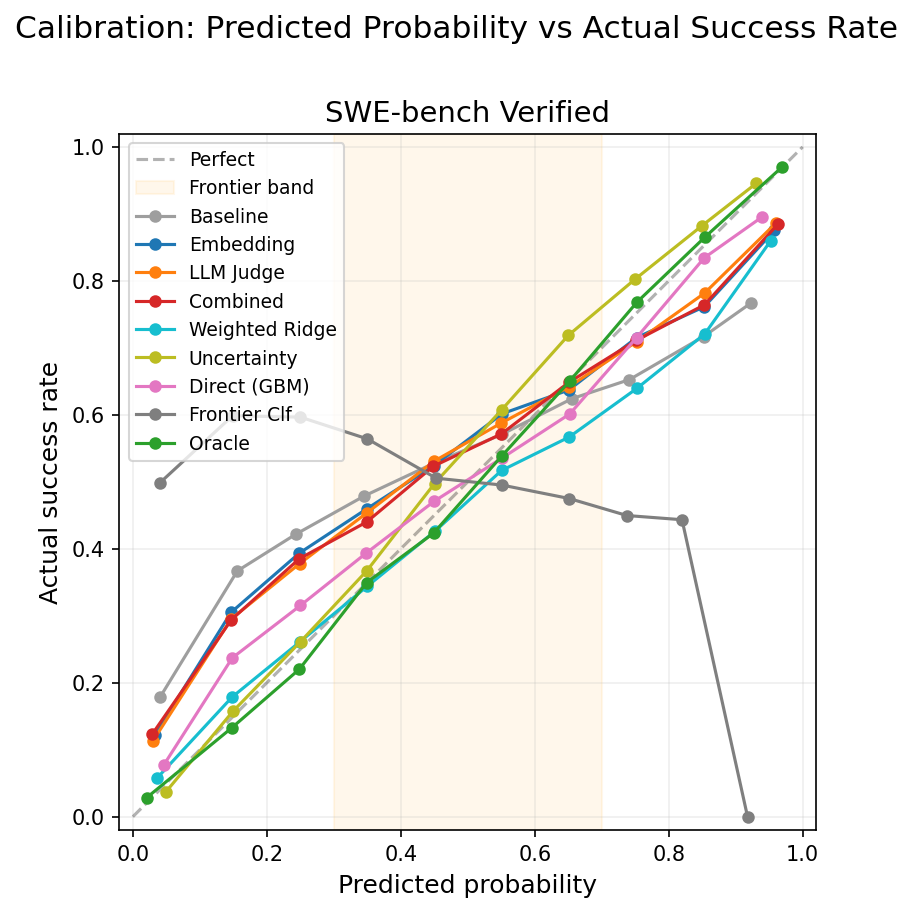

How Uniformly Good Are IRT Difficulty Predictors?
The predictors from Agent Psychometrics work well overall — but not equally well across all difficulty levels. We investigate where they break down, why it matters, and what can be done about it.
Key finding: The paper's predictors achieve 0.84 AUC-ROC overall — but this performance is not uniform across difficulty levels. Predictors excel at identifying obviously easy and obviously hard tasks (AUC > 0.6), but in the medium-difficulty "frontier" band — tasks where agents succeed 40–60% of the time — discriminative power drops to 0.51, barely above random. This is a fundamental bottleneck: even the oracle (full IRT with all data) only reaches 0.58 in this band. We test four modified approaches and find that while frontier discrimination remains intractable, calibration can be substantially improved.
Motivation: Where Uniform Performance Matters
Agent Psychometrics (Ge et al., 2026) shows that task difficulty in agentic coding benchmarks can be predicted from cheap features — LLM-as-a-judge ratings and embeddings — without running any agents. The paper demonstrates strong overall predictive performance (0.84 AUC-ROC) and frames this as useful for benchmark calibration and efficient agent evaluation.
But overall AUC-ROC can mask important non-uniformity. We would naturally expect the predictor to do well on tasks that are obviously easy or obviously hard — these extremes are the easiest to classify. The more interesting question is: how well does the predictor perform across the full difficulty spectrum? In particular, can it resolve the medium-difficulty region where outcomes are genuinely uncertain?
This matters for at least two practical reasons:
- Curriculum scheduling for RL training. Recent work on training LLMs with RL — including E2H Reasoner (2025), Goldilocks RL (2026), and SPaRFT (2025) — shows that scheduling tasks by difficulty (easy→hard) can substantially improve sample efficiency, in some cases by up to 100×. To build an effective curriculum, you need to know not just which tasks are easy or hard, but also which fall in between. If the predictor only resolves the extremes, the curriculum has a blind spot in the middle.
- Guiding environment search and generation. If you're procedurally generating RL training environments, a cheap difficulty predictor lets you evaluate candidates without running agents. But if the predictor can only tell you "this is easy" or "this is hard" and is unreliable in between, it can't help you search for environments at the right difficulty level for your current agent — the zone of proximal development where learning is fastest.
So we ask: is the paper's strong overall AUC driven by the easy cases, or is it uniform across difficulty levels?
Background: The IRT Prediction Pipeline
The paper uses Item Response Theory (IRT), borrowed from psychometrics (SAT, GRE). Each agent has an ability θ and each task has a difficulty b. The probability of success is:
The model is fit on a binary response matrix — 134 agents × 500 tasks for SWE-bench Verified, where each cell records whether the agent solved the task (1) or not (0). Training uses variational inference to estimate θ and b for all agents and tasks.
The paper's prediction task: can you predict b from cheap task features, without running any agents? They use two feature types:
- Embeddings: 5,120-dimensional vectors from DeepSeek-R1 encoding the problem statement
- LLM-as-a-Judge features: 15 integer-scored attributes (1–5 scale) like
solution_complexity,debugging_complexity,fix_localization, rated by an LLM examining the task
A Ridge regression predicts b̂ from features, which is plugged back into the IRT formula. The paper evaluates with AUC-ROC on held-out tasks. The Combined predictor (embeddings + judge features) achieves 0.842 AUC-ROC on SWE-bench Verified.
Why AUC-ROC can be misleading
AUC-ROC measures ranking quality over all (agent, task) pairs. But the distribution is heavily skewed: 72% of pairs are in the extreme bands (agent almost certainly succeeds or fails). Getting those right is easy and inflates the metric. The question is whether the predictor adds value in the remaining 28% where outcomes are uncertain.
Methodology
We reuse the paper's exact 5-fold cross-validation setup — same random seed, same fold-specific IRT models, same predictors, same features. Our overall AUC numbers match Table 2 of the paper exactly, confirming we're evaluating identical models.
Defining the frontier
For each (agent, task) pair, we compute the oracle probability using the full IRT model (trained on all 500 tasks):
We then bin all 67,000 pairs into five difficulty bands:
| Band | oracle_p | Meaning | Pairs | Share |
|---|---|---|---|---|
| [0.0, 0.2) | Agent almost certainly fails | Very hard | 22,977 | 34% |
| [0.2, 0.4) | Agent probably fails | Hard | 6,019 | 9% |
| [0.4, 0.6) | Coin flip | The Frontier | 5,492 | 8% |
| [0.6, 0.8) | Agent probably succeeds | Easy | 7,192 | 11% |
| [0.8, 1.0] | Agent almost certainly succeeds | Very easy | 25,320 | 38% |
Important nuance: the frontier is relative to the agent. A task might be frontier for a mid-tier agent (θ ≈ b, so oracle_p ≈ 0.5) but trivially easy for a strong agent (θ ≫ b, oracle_p ≈ 0.95). We're labeling (agent, task) pairs, not tasks in isolation.
What we measure
- Per-band AUC: Within each band, can the predictor separate actual successes from failures?
- Band confusion matrix: When the predictor says a pair is in band X, which band is it actually in?
- Frontier precision/recall: Among predicted frontier pairs, what fraction are truly frontier?
- Calibration (ECE): When the predictor says p=0.4, is the actual success rate ~40%?
Results: The Paper's Predictors at the Frontier
Predictive power collapses at the frontier
| Predictor | [0, 0.2) | [0.2, 0.4) | [0.4, 0.6) | [0.6, 0.8) | [0.8, 1.0) | Overall |
|---|---|---|---|---|---|---|
| Oracle | 0.793 | 0.600 | 0.579 | 0.593 | 0.761 | 0.945 |
| Combined | 0.624 | 0.531 | 0.515 | 0.498 | 0.628 | 0.843 |
| LLM Judge | 0.632 | 0.530 | 0.510 | 0.500 | 0.614 | 0.842 |
| Embedding | 0.590 | 0.522 | 0.514 | 0.508 | 0.626 | 0.824 |
| Baseline | 0.503 | 0.501 | 0.508 | 0.527 | 0.565 | 0.716 |
The [0.4, 0.6) column tells the story: all predictors achieve AUC ≈ 0.51, essentially random. The impressive overall AUC is driven entirely by separating the extremes. Within the frontier, the predictor knows nothing.
Even the Oracle only gets 0.579 in the frontier band. This is the IRT model with access to all data — the theoretical upper bound. The fact that it can't discriminate well within the frontier suggests this is a fundamental limitation of the 1PL IRT framework and the available features, not a modeling problem we can fix.

Frontier predictions are mostly noise
When the Combined predictor says a pair is in the frontier band [0.4, 0.6), where does it actually land?
| Predicted band | [0, 0.2) | [0.2, 0.4) | [0.4, 0.6) | [0.6, 0.8) | [0.8, 1.0) | N |
|---|---|---|---|---|---|---|
| [0, 0.2) | 72.4% | 11.5% | 6.8% | 5.5% | 3.9% | 22,856 |
| [0.2, 0.4) | 33.6% | 17.6% | 16.1% | 15.0% | 17.7% | 7,725 |
| [0.4, 0.6) | 22.6% | 11.3% | 16.6% | 20.5% | 29.0% | 6,634 |
| [0.6, 0.8) | 13.3% | 9.2% | 9.7% | 20.5% | 47.3% | 8,283 |
| [0.8, 1.0) | 5.8% | 2.4% | 3.7% | 8.0% | 80.1% | 21,502 |
The predictor is reliable at the extremes — 80% accuracy for "easy" and 72% for "hard." But when it predicts "frontier," only 16.6% of pairs actually land there. The plurality (29%) are easy tasks being misjudged. The Baseline does even worse at 11.2%. The predictor is doing coarse "hard vs. easy" classification, and the frontier predictions are spillover noise.
Frontier precision and recall
Using a wider [0.3, 0.7] band to capture more samples (base rate: 17.1% of pairs are truly frontier):
| Predictor | Precision | Recall | #Predicted | #True |
|---|---|---|---|---|
| Combined | 0.301 | 0.368 | 14,002 | 11,445 |
| LLM Judge | 0.295 | 0.380 | 14,737 | 11,445 |
| Embedding | 0.263 | 0.372 | 16,192 | 11,445 |
| Baseline | 0.212 | 0.362 | 19,600 | 11,445 |
Combined achieves 30% precision vs. 21% for the baseline — a real improvement over the 17% base rate, but still: 70% of "frontier" predictions are wrong.
Can Modified Approaches Do Better?
Knowing that the paper's pipeline struggles at the frontier, we tested four alternative approaches. All use the same LLM Judge features (15-dim) and the same 5-fold CV setup, so comparisons are apples-to-apples.
The four approaches
| Approach | Key Idea |
|---|---|
| Weighted Ridge | Same Ridge regression, but upweight frontier tasks in the loss. Weight = 4p(1−p), peaking at 1.0 for 50% solve rate and decaying to 0 at the extremes. Tells the model: "get the medium-difficulty tasks right, even at the expense of easy/hard ones." |
| Uncertainty (Bayesian) | Replace Ridge with BayesianRidge, which gives a posterior distribution over b instead of a point estimate. Marginalize: P(success) = Eb[sigmoid(θ − b)]. When uncertain about difficulty, predictions get pulled toward 0.5 rather than overcommitting. |
| Direct (GBM) | Skip the scalar b bottleneck. Train a GradientBoostingClassifier on [θagent, task_features] → outcome directly, predicting P(success) without decomposing into ability and difficulty. |
| Frontier Classifier | Reframe as classification: train GBM on [θagent, task_features] → is_frontier. Directly optimizes for frontier identification. Outputs P(frontier), not P(success). |
Frontier discrimination: still intractable
| Predictor | [0, 0.2) | [0.2, 0.4) | [0.4, 0.6) | [0.6, 0.8) | [0.8, 1.0) | Overall |
|---|---|---|---|---|---|---|
| Oracle | 0.793 | 0.600 | 0.579 | 0.593 | 0.761 | 0.945 |
| Combined (paper) | 0.624 | 0.531 | 0.515 | 0.498 | 0.628 | 0.843 |
| Direct (GBM) | 0.613 | 0.528 | 0.518 | 0.500 | 0.602 | 0.825 |
| Weighted Ridge | 0.582 | 0.520 | 0.512 | 0.516 | 0.612 | 0.820 |
| Uncertainty | 0.633 | 0.531 | 0.510 | 0.500 | 0.614 | 0.842 |
| Baseline | 0.503 | 0.501 | 0.508 | 0.527 | 0.565 | 0.716 |
No approach meaningfully improves frontier-band AUC. The best (Direct GBM at 0.518) is barely above the paper's Combined (0.515). Removing the scalar b bottleneck, reweighting the loss, marginalizing over uncertainty — none of it helps. The features simply don't contain enough signal to predict individual outcomes when a task is at an agent's boundary.
Precision/recall trade-offs: the Uncertainty approach stands out
| Predictor | Precision | Recall | #Predicted |
|---|---|---|---|
| Combined (paper) | 0.301 | 0.368 | 14,002 |
| LLM Judge | 0.295 | 0.380 | 14,737 |
| Weighted Ridge | 0.281 | 0.464 | 18,925 |
| Direct (GBM) | 0.268 | 0.473 | 20,182 |
| Uncertainty (Bayesian) | 0.268 | 0.640 | 27,335 |
| Frontier Classifier | 0.210 | 0.646 | 35,099 |
| Baseline | 0.212 | 0.362 | 19,600 |
The Uncertainty (Bayesian) approach achieves 0.64 recall — it finds nearly twice as many true frontier pairs as the paper's Combined predictor (0.37 recall). The mechanism is intuitive: when BayesianRidge is uncertain about a task's difficulty, the marginalized probability gets pulled toward 0.5, which lands more predictions in the frontier band. This comes at a cost — precision drops from 0.30 to 0.27 — but the net effect is positive: more true frontier pairs are captured.
The Frontier Classifier achieves similar recall but with baseline-level precision (0.21), meaning it's labeling too many pairs as frontier. The Uncertainty approach gets the better trade-off.
Calibration: the clear win
Calibration is where the new approaches genuinely shine. The Uncertainty predictor cuts overall ECE by 60%, and the Direct GBM achieves the best frontier-region calibration. This means their probability estimates in the 30–70% range are much more trustworthy — even though they can't tell you which individual outcomes will be successes vs. failures.
| Predictor | Overall ECE | Frontier ECE |
|---|---|---|
| Oracle | 0.008 | 0.010 |
| Uncertainty (Bayesian) | 0.033 | 0.048 |
| Direct (GBM) | 0.041 | 0.034 |
| Weighted Ridge | 0.065 | 0.039 |
| Combined (paper) | 0.083 | 0.046 |
| LLM Judge | 0.080 | 0.057 |
| Baseline | 0.128 | 0.072 |

The Uncertainty predictor achieves 0.033 overall ECE vs. 0.083 for the paper's best — a 60% reduction in calibration error. The mechanism: by marginalizing over the posterior distribution of b, it naturally expresses epistemic uncertainty as probability estimates closer to 0.5, rather than overconfidently predicting extreme probabilities for tasks whose difficulty is hard to pin down.
The Direct GBM achieves the best frontier-specific ECE (0.034) — when it says an agent has a 40% chance of solving a task, the actual success rate is very close to 40%.
Takeaways
The non-uniformity is real and fundamental
The paper's predictors are genuinely effective — but their 0.84 AUC-ROC is not uniformly distributed across difficulty levels. Performance is strong at the extremes (AUC > 0.6 for tasks where agents have <20% or >80% success probability) and essentially random in the middle (AUC ≈ 0.51 for the 40–60% band). This isn't a flaw in the paper's method — it's a fundamental property: even the Oracle with full data only achieves 0.58 in the frontier band. The available features simply don't contain enough signal to discriminate outcomes when tasks are at an agent's boundary.
What the predictor is good for
The non-uniform performance profile means the predictor is well-suited for some tasks but not others:
- Difficulty ordering for curriculum scheduling: The predictor reliably ranks tasks along the easy–hard spectrum. For easy→hard curriculum approaches like E2H Reasoner, this is exactly what's needed. You don't need perfect resolution in the middle — you need a reliable ordering, which the predictor provides.
- Filtering extremes: The confusion matrix shows 80% accuracy when predicting "easy" and 72% for "hard." If you're generating candidate environments and want to remove the obvious junk (too easy, too hard), the predictor is a reliable and cheap pre-filter.
- Aggregate difficulty estimation: With the Bayesian Uncertainty modification (60% lower ECE), you can trust aggregate statistics like "roughly 20% of these candidate tasks are frontier-difficulty for agent X" — even though individual task-level predictions in that band are noisy.
What the predictor cannot do
- Fine-grained frontier identification: Among tasks in the 30–70% success probability range, the predictor cannot reliably tell you which ones will be solved and which won't. For adaptive task selection within this band, you need online signals — learning progress, regret, or bandit approaches like SPaRFT that adapt based on actual training outcomes.
The Uncertainty modification is worth adopting
Of the four modifications we tested, the Bayesian Uncertainty approach offers the best practical trade-off: 60% better calibration, 73% higher frontier recall, at a negligible cost in precision. The mechanism — marginalizing over posterior uncertainty in difficulty — is principled and adds minimal computational overhead. If you're using IRT difficulty predictions downstream, replacing the point-estimate Ridge regression with BayesianRidge is a simple change that produces more trustworthy probability estimates, especially in the uncertain middle range.
Open questions
- Would 2PL IRT (adding a per-task discrimination parameter) help? Tasks with low discrimination have intrinsically fuzzy frontiers that no predictor can resolve. Predicting discrimination from features could help identify which tasks can be frontier-classified at all.
- Could multi-dimensional IRT capture task-agent interactions that 1PL misses? An agent might be at the frontier on debugging tasks but strong on refactoring — a single scalar difficulty can't express this.
- Is there a richer feature set — agent trajectory data, execution traces, or runtime behavior — that contains frontier-relevant signal beyond what problem descriptions and LLM judge ratings provide?
- Does the non-uniformity observed here generalize to other benchmarks and domains (GSO, TerminalBench, non-coding RL environments)?
Related work
Our analysis connects to a growing body of work on difficulty-aware training for LLMs:
- The 85% Rule for Optimal Learning (Wilson et al., 2019) — proves that SGD-based learners learn fastest at ~85% accuracy, not 50%. The optimal training difficulty is easier than the "frontier" midpoint.
- E2H Reasoner (2025) — easy→hard curriculum RL for LLM reasoning. Easy tasks build foundations; they must be faded out to avoid overfitting.
- Goldilocks RL (2026) — teacher model adaptively selects tasks at appropriate difficulty for the student, avoiding both extremes.
- SPaRFT (2025) — clusters tasks by difficulty + semantics, uses bandits for adaptive selection. Achieves comparable accuracy with 100× fewer samples.
- Rethinking Easy-to-Hard (2026) — a contrasting finding: no robust advantage of difficulty-based sequencing for deductive reasoning, suggesting the picture is domain-dependent.
- Proximal Curriculum (IJCAI 2024) — formalizes the zone of proximal development for RL curriculum design.